A · Лінія —
003 · роадмап · агент №4
Однакові дані, однакова ширина в’юпорта, однакова точка скролу. Різницю між A, B і C видно в одному кадрі, а не з опису. Кнопки нижче ведуть усі три макети в ту саму точку сторінки одночасно; статична серія знімків — під пультом, на випадок якщо живі кадри не піднялись.
A · Лінія —
B · Сітка —
C · Станції —
Знято агентом №4 у живому Chrome: один і той самий в’юпорт, ті самі дані
(roadmap.json без параметрів), кожен кадр вирівняний по тій самій точці
сторінки. Пульс «В роботі» у всіх кадрах зупинений на однаковій фазі — інакше кільце
було б різного розміру й порівняння брехало б.
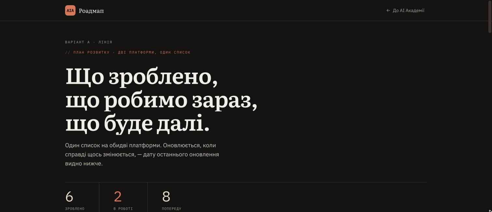
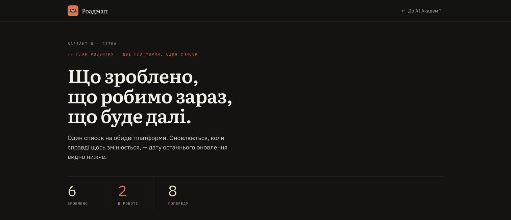
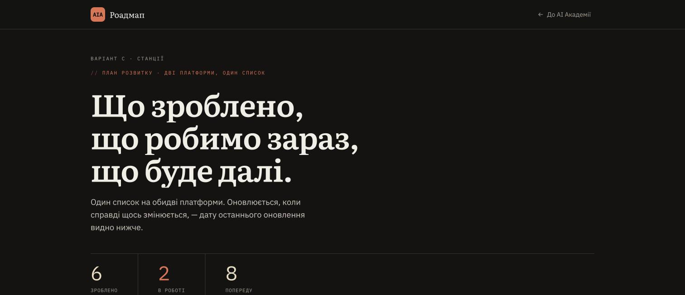
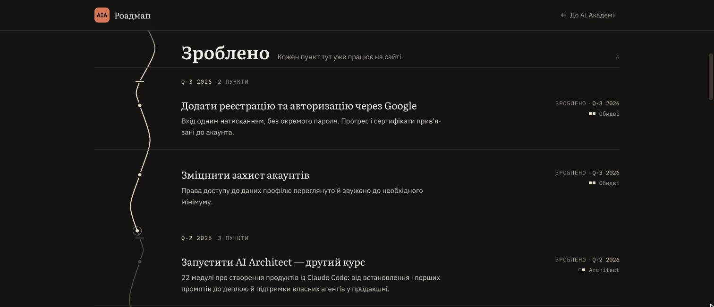
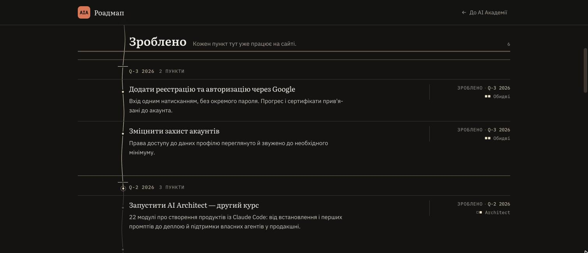
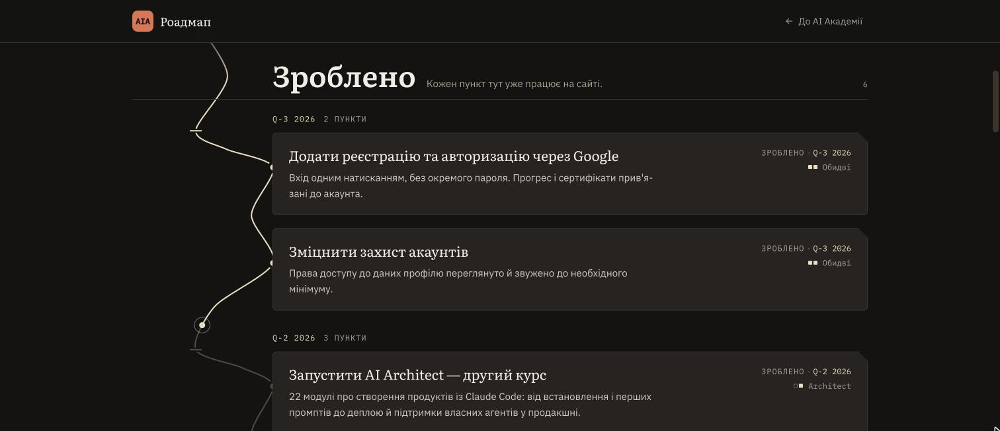
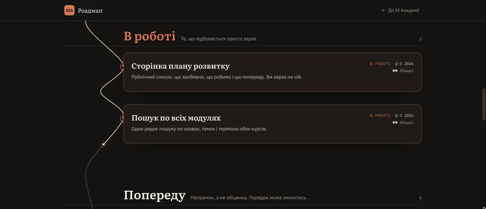
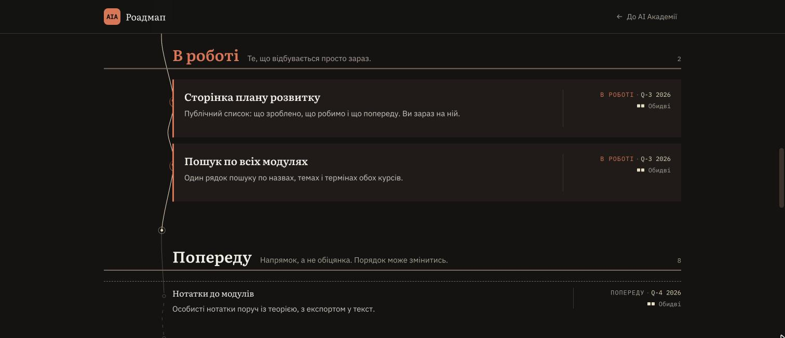
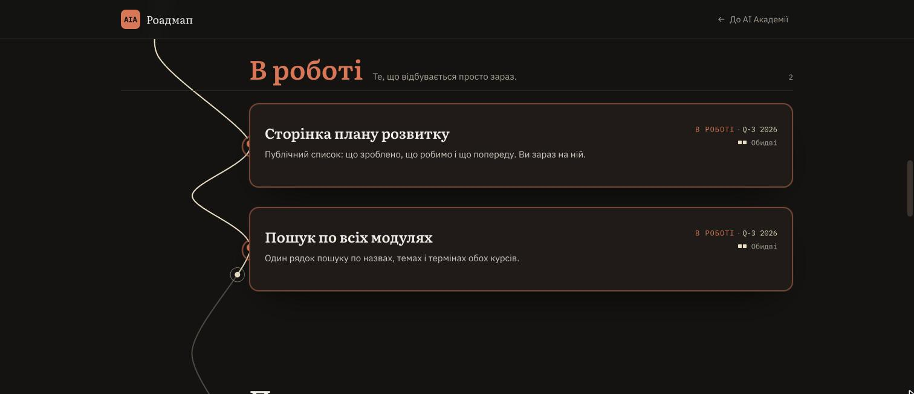
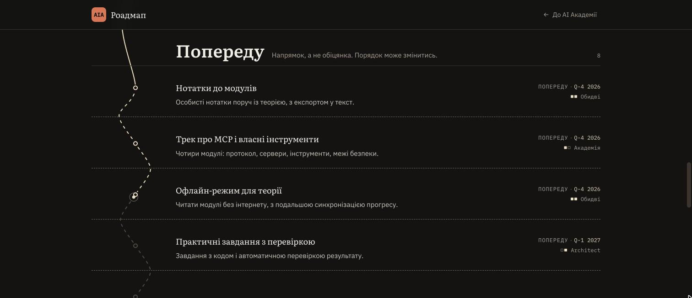
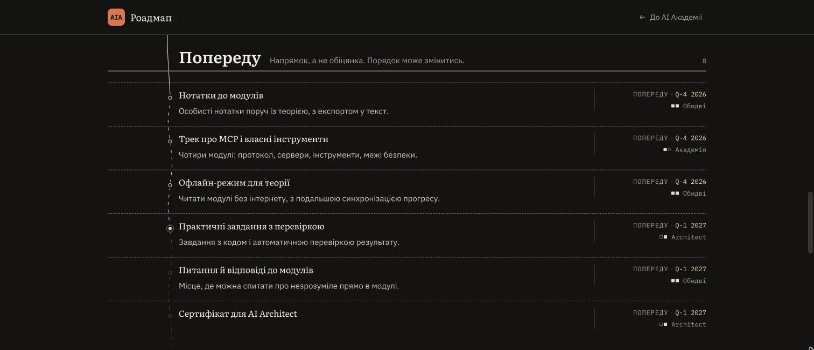
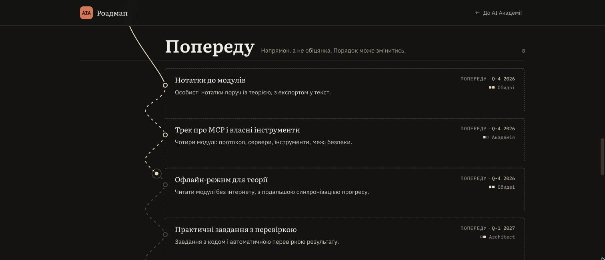
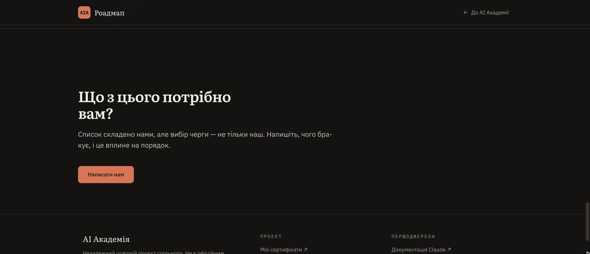
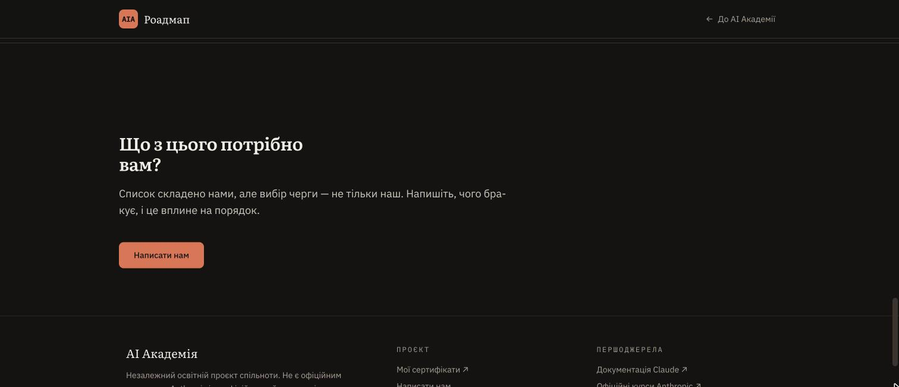
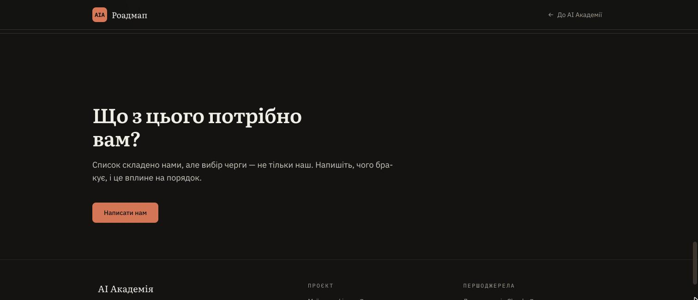
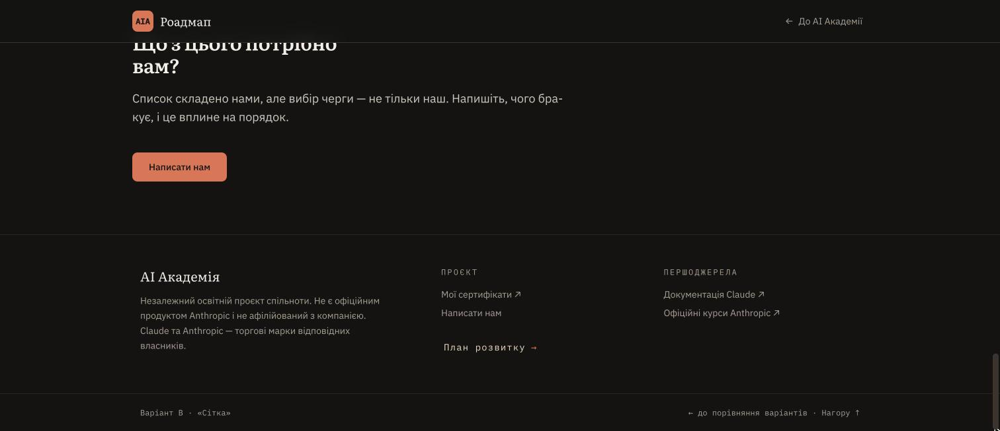
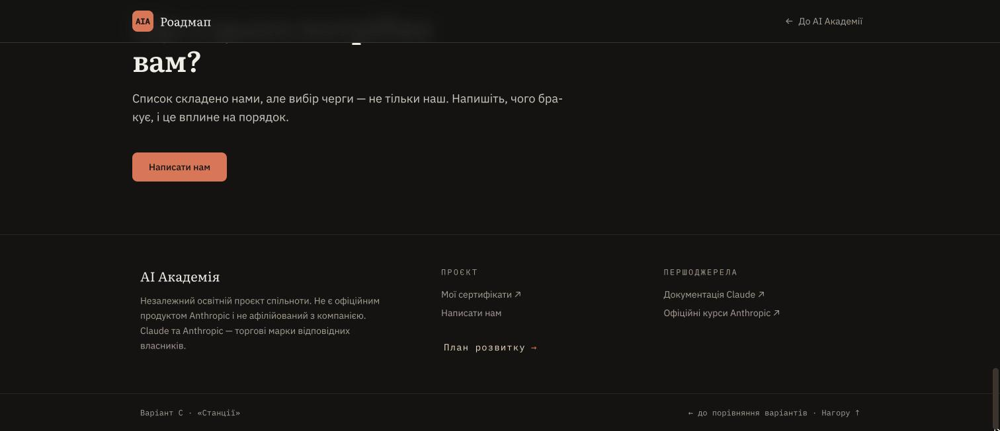
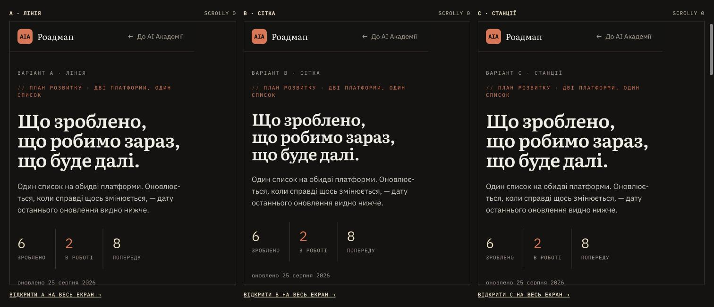
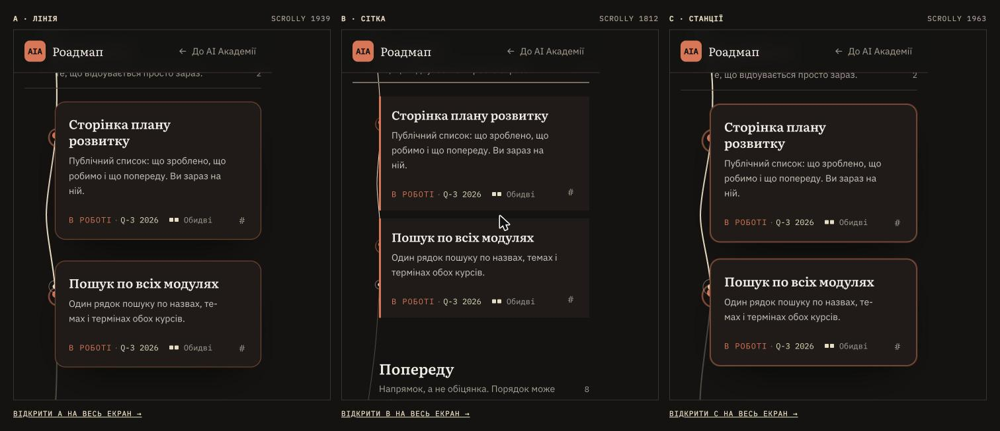
| Точка | Питання, на яке відповідає кадр |
|---|---|
| 1 · перший екран | Чи видно перший пункт, чи лише натяк на нього (зауваження К12) |
| 2 · зроблено | Що тримає структуру: накреслення (A), правила й колонки (B), силуети (C) |
| 3 · в роботі | Головне порівняння: одна заливка проти смуги проти предмета |
| 4 · попереду | Чи читається невизначеність пунктиром і наскільки щільно |
| 5 · кінцівка | Чи спрацьовує точка спокою — єдине місце без лінії |
| 6 · футер і вхід | Ціна акцентної точки входу: +64px проти рядка списку 28px |
| 7 · мобілка | Що з ефектів свідомо звужено на 390px |
← вітрина варіантів · verdict.md — вердикт, вимірювання, питання до власника